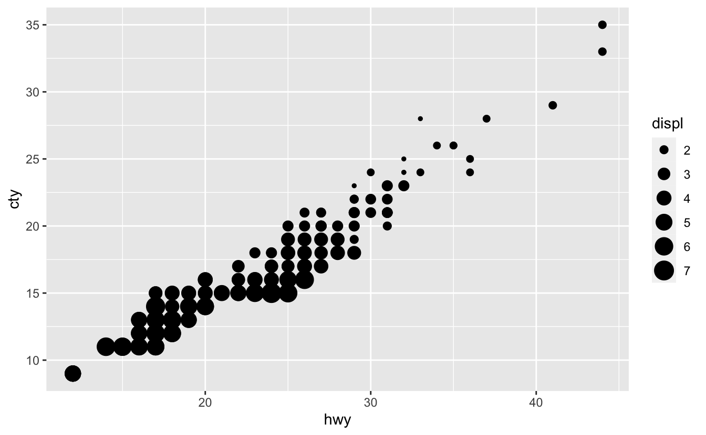
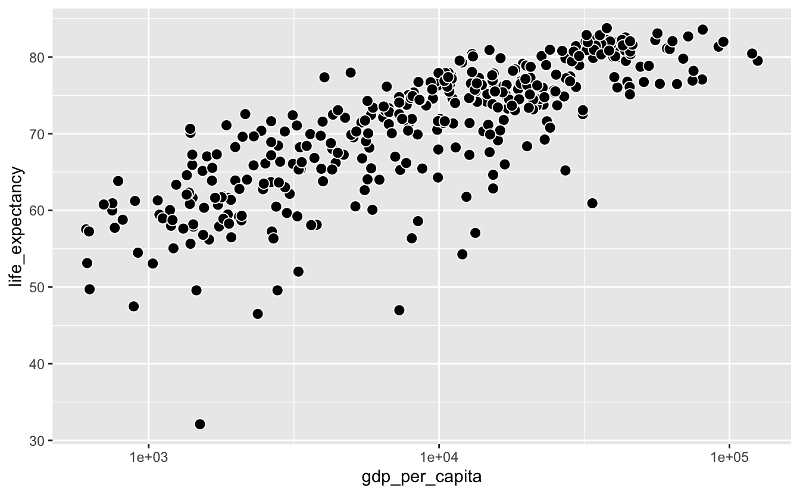

5 Continuous-continuous relationships
This chapter uses the following data sets.
library(tidyverse)
library(dcldata)5.1 Introduction
Visualizing continuous-continuous relationships allows you to see associations between variables. In this chapter, we’ll use Gapminder data from the dcldata package to visualize the relationship between life expectancy and per capita GDP.
Here are some questions we might ask about the relationship between life expectancy and per capita GDP:
- Is there a relationship between these two variables?
- How strong is this relationship?
- What direction does the relationship go? Does life expectancy increase or decrease with per capita GDP?
- Does life expectancy linearly increases with per capita GDP? Or does the benefit of increasing GDP slow down after a certain point?
We’ll examine these questions, and others, in the course of this chapter. First, we’ll introduce some mechanics. The following ggplot2 cheat sheet sections will be relevant.
- Scales
- Coordinate systems
- Geoms:
geom_point()geom_hex()geom_bin2d()geom_smooth()geom_line()
5.2 Mechanics
In this mechanics section, you’ll learn about adding annotations to your plots and some more details about continuous scales.
5.2.1 Annotations
Adding text to your visualizations can make them more informative. The following section from R4DS will introduce you the mechanics of effective annotations.
5.2.2 Log scales
Transforming linear scales into log scales is a common use of the scale functions. Log scales are helpful in several different scenarios.
When a variable spans several orders of magnitude, a linear scale will tend to hide differences between smaller values.
asia_2015 <-
gm_combined %>%
filter(region == "Asia", year == 2015)
asia_2015 %>%
mutate(name = fct_reorder(name, population)) %>%
ggplot(aes(population, name)) +
geom_point() +
stamp("Bad")Notice how countries from Jordan to Micronesia appear to have almost the same population. Many of the countries also appear to have a population of 0.
Using a log scale for population spreads out the smaller countries.
asia_2015 %>%
mutate(name = fct_reorder(name, population)) %>%
ggplot(aes(population, name)) +
geom_point() +
scale_x_log10() It’s now possible to determine the populations of the smaller countries, as well as distinguish them from one another.
Log scales are also useful for data that follow a power law. You’ll find examples of power law relationships in many different domains. One common example is word frequencies. Say you count the number of times each word appears in some text, then assign each word a ranking based on this frequency. For many collections of text, the frequency of each word is inversely proportional to its rank, and this relationship follows a power law.
For example, war_and_peace contains frequencies and ranks for every word used in Leo Tolstoy’s War and Peace.
war_and_peace
#> # A tibble: 18,087 x 3
#> word freq rank
#> <chr> <int> <int>
#> 1 the 34549 1
#> 2 and 22232 2
#> 3 to 16675 3
#> 4 of 14889 4
#> 5 a 10522 5
#> 6 he 9872 6
#> # … with 18,081 more rowsIn linear space, the relationship between freq and rank looks like this:
war_and_peace %>%
ggplot(aes(rank, freq)) +
geom_point()However, if we use log scales for both axes, the relationship becomes linear.
war_and_peace %>%
ggplot(aes(rank, freq)) +
geom_point() +
scale_x_log10() +
scale_y_log10()Transforming scales so that the data looks linear is useful for several reasons. First, if your data follows a power law relationship, it will often cover several orders of magnitude, and so very small or very large values will be difficult to distinguish. Using a log scale will spread out these values. Second, transforming both axes is an easy way to check if your data follows a power law relationship.
5.2.3 Continuous color scales
There are multiple ways to map a continuous variable to a color scale. In this section, we’ll cover sequential and diverging color scales.
The default continuous color functions are scale_color_gradient() and scale_fill_gradient(), which create sequential color scales.
By default, scale_*_gradient() maps low values in the data to a dark blue and high values to a light blue.
points <-
tibble(x = seq(-5, 5, 1))
points %>%
ggplot(aes(x, 1, fill = x)) +
geom_tile(height = .1) +
theme_void()You can change this sequential color scale by adjusting scale_*_gradient()’s low and high arguments. scale_*_gradient() maps the minimum value in your data to the low color, and the maximum value in your data to the high color.
points %>%
ggplot(aes(x, 1, fill = x)) +
geom_tile() +
scale_fill_gradient(low = "#efedf5", high = "#756bb1") +
theme_void()The viridis color scale was designed to be colorblind-friendly. scale_color_viridis_c() and scale_fill_viridis_c() create sequential scales using the viridis colors.
(The _c stands for continuous. There is also a scale_fill_viridis_d() for discrete scales.)
points %>%
ggplot(aes(x, 1, fill = x)) +
geom_tile() +
scale_fill_viridis_c() +
theme_void()The viridis scales are generally better than the default blue scale. A common use case for the viridis scale is with geom_hex().
diamonds %>%
ggplot(aes(carat, price)) +
geom_hex() +
scale_x_log10() +
scale_y_log10() +
scale_fill_viridis_c() scale_color_gradient2() and scale_fill_gradient2() create diverging color scales.
points %>%
ggplot(aes(x, 1, fill = x)) +
geom_tile() +
scale_fill_gradient2() +
theme_void()Diverging color scales are useful if you want to encode both the sign and magnitude of each value. For example, say you have temperature data and want to encode both the temperature and whether or not that temperature is below freezing.
scale_*_gradient2() has three color set points that you can adjust: low, mid, and high. Like scale_*_gradient(), scale_*_gradient2() maps the lowest value in your data to low and the highest to high. By default, scale_*_gradient2() maps 0 to mid. If you want to adjust which value is mapped to mid, you can adjust the midpoint argument.
points %>%
ggplot(aes(x, 1, fill = x)) +
geom_tile() +
scale_fill_gradient2(midpoint = 2) +
theme_void()5.2.4 Size scales
As you’ll see, geom_point() is a common way to visualize continuous-continuous relationships. In some situations, size is a useful way to encode another continuous variable.
mpg %>%
ggplot(aes(hwy, cty, size = displ)) +
geom_point() +
scale_size()
The default size scale function is scale_size(). Humans judge the size of circles based on area, not radii, so scale_size() scales the area of the circles.
You can change the number of circles that appear in the legend by adjusting the breaks.
mpg %>%
ggplot(aes(hwy, cty, size = displ)) +
geom_point() +
scale_size(breaks = c(2, 4, 6))You can also adjust the range of possible circle areas with the range argument.
mpg %>%
ggplot(aes(hwy, cty, size = displ)) +
geom_point() +
scale_size(breaks = c(2, 4, 6), range = c(0.5, 4))5.3 Two continuous variables
gm_combined is a subset of the Gapminder data and is included in the dcldata package. It includes data on population, per capita GDP, and life expectancy for 183 countries from every five years, starting in 1950 and ending in 2015.
gm_combined
#> # A tibble: 2,562 x 7
#> iso_a3 name region year population gdp_per_capita life_expectancy
#> <chr> <chr> <chr> <dbl> <dbl> <dbl> <dbl>
#> 1 afg Afghanistan Asia 1950 7752118 1040 32.0
#> 2 afg Afghanistan Asia 1955 8270581 1131 35.1
#> 3 afg Afghanistan Asia 1960 8996351 1213 38.6
#> 4 afg Afghanistan Asia 1965 9938414 1190 42.2
#> 5 afg Afghanistan Asia 1970 11126123 1183 45.8
#> 6 afg Afghanistan Asia 1975 12590286 1211 46.3
#> # … with 2,556 more rowsEarlier, we said we were interested in the relationship between life_expectancy and gdp_per_capita. When you have two continuous variables, a scatter plot using geom_point() is usually a good starting point.
gm_combined %>%
ggplot(aes(gdp_per_capita, life_expectancy)) +
geom_point() +
stamp("Bad")However, there are several problems with this plot. First, most of the data is concentrated on the left edge of the plot because of a few large gdp_per_capita values. A log scale helps, but there is a lot of data and many of the points still overlap.
gm_combined %>%
ggplot(aes(gdp_per_capita, life_expectancy)) +
geom_point() +
scale_x_log10() +
stamp("Bad")The large amount of data makes it difficult to determine how many points there are in a given area. In the next section, we’ll talk about strategies for dealing with overplotting.
5.3.1 Overplotting
One way to address overplotting is to bin the data and then use color to encode the number of points that fall in each bin. geom_bin2d() and geom_hex() both carry out this strategy.
geom_bin2d() divides up the total data space into rectangular bins. The fill color of the bin represents how many data points fall into the area covered by that bin.
gm_combined %>%
ggplot(aes(gdp_per_capita, life_expectancy)) +
geom_bin2d() +
scale_x_log10()From this plot, you can see that the highest concentration of points is around (1e4, 70).
geom_hex() uses hexagons instead of rectangles.
gm_combined %>%
ggplot(aes(gdp_per_capita, life_expectancy)) +
geom_hex() +
scale_x_log10()We recommend using geom_hex() instead of geom_bin2d() in most situations, since it provides a finer resolution of the shape of the distribution of the underlying data.
The contrast between the viridis colors makes the geom_hex() plot even easier to decode.
gm_combined %>%
ggplot(aes(gdp_per_capita, life_expectancy)) +
geom_hex() +
scale_x_log10() +
scale_fill_viridis_c()Like geom_histogram(), geom_bin2d() and geom_hex() both create a default number of bins, and you can adjust the binwidth with the bins and binwidth arguments. In our example, the default binwidth does a good job.
Now, say we want to investigate just 2010 and 2015.
gm_combined_2010_2015 <-
gm_combined %>%
filter(year %in% c(2010, 2015))
gm_combined_2010_2015 %>%
ggplot(aes(gdp_per_capita, life_expectancy)) +
geom_point() +
scale_x_log10()There are fewer points, but there’s still some overplotting. We could use geom_hex() again.
gm_combined_2010_2015 %>%
ggplot(aes(gdp_per_capita, life_expectancy)) +
geom_hex() +
scale_x_log10() +
scale_fill_viridis_c()Most of the hexagons only represent a single point, so geom_hex() isn’t the best option.
Another option is change the shape of the dots so that they have visible borders. By default, geom_point() points are solid-colored circles, but there are actually 25 different possible shapes. The following image from the Scales section of the ggplot2 cheat sheet displays these shapes along with their identifying numbers.

shape = 21 points have both a border and a fill. By default, the border is black and the fill is transparent.
gm_combined_2010_2015 %>%
ggplot(aes(gdp_per_capita, life_expectancy)) +
geom_point(shape = 21, size = 3) +
scale_x_log10()The transparent interiors and black borders make it easier to perceive individual points and spot areas of overlap. This effect is stronger if you fill the circles and add a white border.
gm_combined_2010_2015 %>%
ggplot(aes(gdp_per_capita, life_expectancy)) +
geom_point(shape = 21, fill = "black", color = "white", size = 3) +
scale_x_log10() 
A simpler strategy is to make the points more transparent. In geom_point(), you can adjust the transparency with the alpha argument.
gm_combined_2010_2015 %>%
ggplot(aes(gdp_per_capita, life_expectancy)) +
geom_point(alpha = 0.5, size = 3) +
scale_x_log10()Adjusting alpha makes it easier to see which areas have a high density.
In this situation and most others, adjusting alpha is better than using shape = 21. The shape = 21 approach is a good solution to minor overplotting if you have a small number of points and want to emphasize the individual values. alpha is more general and works even if you have a large number of points with a lot of overlap.
Sometimes, your points will completely overlap.
mpg %>%
ggplot(aes(displ, hwy)) +
geom_point()
In these situations, you can use geom_count() to encode the number of points at a particular location with size.
mpg %>%
ggplot(aes(displ, hwy)) +
geom_count() +
scale_size()5.3.2 Smoothing
Here’s our earlier geom_hex() plot.
gm_combined %>%
ggplot(aes(gdp_per_capita, life_expectancy)) +
geom_hex() +
scale_x_log10() +
scale_fill_viridis_c()
geom_hex() does a good job of representing the data, but it can make it difficult to see the general trend. We’ll use a smooth line to get a quick sense of the trend.
gm_combined %>%
ggplot(aes(gdp_per_capita, life_expectancy)) +
geom_hex() +
geom_smooth() +
scale_x_log10() +
scale_fill_viridis_c()
#> `geom_smooth()` using method = 'gam' and formula 'y ~ s(x, bs = "cs")'The shaded areas around the blue line represent the confidence intervals. The larger the shaded gray area, the higher the uncertainty in that area. In this case, the confidence intervals are larger around the lowest and highest values of gdp_per_capita.
Notice that we got a message saying geom_smooth() is using “method = ‘gam.’” There are many different methods we could use to create a smooth line. “gam,” which is short for generalized additive model, is one. By default, geom_smooth() uses method = "gam" if your data has more than 1000 points, and method = "loess" if you have fewer than 1000 points because LOESS (locally estimated scatter plot smoothing) can be computationally unfeasible for larger data sets.
In general, we recommend using method = "loess" unless you have far more than 1000 points. We only have 2500 points, so we can try LOESS.
gm_combined %>%
ggplot(aes(gdp_per_capita, life_expectancy)) +
geom_hex() +
geom_smooth(method = "loess") +
scale_x_log10() +
scale_fill_viridis_c() Notice that method = "loess" produces a smoother trend line.
geom_smooth() will default to method = "gam" if you have too much data for LOESS, which means you will rarely need to manually specify method = "gam" inside geom_smooth().
Smooth lines are a helpful tool, but they aren’t always necessary. Use smooth lines when you care about understanding or communicating a trend, but that trend is not immediately obvious without a smooth line.
Sometimes, you’ll want to only show the smooth lines. This is a good option if:
- You care more about trends than individual values.
- You want to show multiple trends on the same plot.
- You have more data than you can reasonably show on one plot.
For example, here’s a plot showing the relationship between gdp_per_capita and life_expectancy. We’ve also used color to encode region.
gm_combined %>%
ggplot(aes(gdp_per_capita, life_expectancy, color = region)) +
geom_point() +
scale_x_log10() +
stamp("Bad")
In this plot, there are too many data points to determine the relationship between life_expectancy and gdp_per_capita for each region. We could add a smooth line on top of the points for each region.
gm_combined %>%
ggplot(aes(gdp_per_capita, life_expectancy, color = region)) +
geom_point() +
geom_smooth(method = "loess") +
scale_x_log10() +
stamp("Bad")However, this is even worse. There is too much going on, and you can’t distinguish the colored smooth lines on top of all the points.
Removing the points allows you to see that each region has a slightly different trend.
gm_combined %>%
ggplot(aes(gdp_per_capita, life_expectancy, color = region)) +
geom_smooth(method = "loess") +
scale_x_log10()You can remove the confidence intervals by setting se = FALSE inside geom_smooth(), but you should only do so if the confidence intervals are small and constant throughout the entire smooth line.
When you decode this plot, you have to connect each line to its corresponding legend label. Notice that, even though there are only four regions, you still have to go back-and-forth between the legend and the plot quite a bit. This process would be easier if the order of the legend matched the order of the lines (Wilke (2019)). One option is to change the order of the legend by adjusting breaks in scale_color_discrete().
gm_combined %>%
ggplot(aes(gdp_per_capita, life_expectancy, color = region)) +
geom_smooth(method = "loess") +
scale_x_log10() +
scale_color_discrete(breaks = c("Europe", "Americas", "Asia", "Africa"))A better option is to use fct_reorder2() to reorder region by the last life_expectancy value.
gm_combined %>%
mutate(region = fct_reorder2(region, gdp_per_capita, life_expectancy)) %>%
ggplot(aes(gdp_per_capita, life_expectancy, color = region)) +
geom_smooth(method = "loess") +
scale_x_log10()
fct_reorder2() essentially first arranges region by gdp_per_capita, then reorders region by the last value in life_expectancy. This option is better than reordering by hand because it is simpler and will still work even if the data changes.
We can also adjust legend.justification in theme() so that the legend is at the top of the plot, closer to the lines.
gm_combined %>%
mutate(region = fct_reorder2(region, gdp_per_capita, life_expectancy)) %>%
ggplot(aes(gdp_per_capita, life_expectancy, color = region)) +
geom_smooth(method = "loess") +
scale_x_log10() +
theme(legend.justification = "top")It’s now much easier to connect a line with a region.
5.3.3 Paired data
Paired data occurs when you have the same measure at two separate points. For example, if you measured the heights of a group of children at age three, and then again two years later at age five, you would have paired data.
In the Gapminder data, we might want to understand how life expectancy changed from 2010 to 2015 for each country. This data is paired. The same metric (life expectancy) was measured twice at two different points.
To get the data into a form that is easy to visualize, we’ll need to use pivot_wider().
gm_combined_paired <-
gm_combined_2010_2015 %>%
select(iso_a3, name, region, year, life_expectancy) %>%
pivot_wider(
names_from = year,
names_prefix = "year_",
values_from = life_expectancy
)
gm_combined_paired
#> # A tibble: 183 x 5
#> iso_a3 name region year_2010 year_2015
#> <chr> <chr> <chr> <dbl> <dbl>
#> 1 afg Afghanistan Asia 56.2 57.9
#> 2 alb Albania Europe 76.3 77.6
#> 3 dza Algeria Africa 76.6 77.3
#> 4 ago Angola Africa 60.1 64
#> 5 atg Antigua and Barbuda Americas 76.8 77.2
#> 6 arg Argentina Americas 75.8 76.5
#> # … with 177 more rowsOne way to visualize paired data is to encode one of the values on x-axis and one on the y-axis.
gm_combined_paired %>%
ggplot(aes(year_2010, year_2015)) +
geom_point(alpha = 0.5) There are a couple of problems with this plot. First, notice that even though the x- and y-axes are in the same units (years) and cover a similar range of values, one unit on the x-axis covers a different number of years than one unit on the y-axis. This is unnecessarily confusing. We can use coord_fixed() to set the aspect ratio to 1.
gm_combined_paired %>%
ggplot(aes(year_2010, year_2015)) +
geom_point(alpha = 0.5) +
coord_fixed()It looks like, for most countries, life expectancy didn’t change much from 2010 to 2015. A reference line will make it easier to tell if they stayed exactly the same, increased, or decreased.
Previously, you learned about vertical and horizontal reference lines at fixed intercepts. In this case, we’ll want a reference line at y = x. This reference line indicates what the data would look like if life expectancy did not change from 2010 to 2015. Points above the lines represent countries in which life expectancy increased from 2010 to 2015. Points below the line represent countries in life expectancy decreased from 2010 to 2015. We’ll add annotations to make this distinction easier to decode.
gm_combined_paired %>%
ggplot(aes(year_2010, year_2015)) +
geom_point(alpha = 0.5) +
geom_abline(slope = 1, intercept = 0, color = "red") +
annotate(
geom = "text",
x = c(30, 65),
y = c(85, 50),
label = c("Life expectancy increased", "Life expectancy decreased"),
hjust = 0
) +
coord_fixed() It’s now easy to see that life expectancy increased for most countries between 2010 and 2015.
There are a couple of points far away from the red line. What countries do these points represent? Labelling these points could make our plot more interesting.
outliers <-
gm_combined_paired %>%
mutate(diff = year_2015 - year_2010) %>%
filter(diff < -0.5 | diff > 5) %>%
mutate(nudge_x = if_else(diff > 0, -5, 2))
gm_combined_paired %>%
ggplot(aes(year_2010, year_2015)) +
geom_point(alpha = 0.5) +
geom_abline(slope = 1, intercept = 0, color = "red") +
ggrepel::geom_text_repel(
aes(label = name),
data = outliers,
nudge_x = outliers$nudge_x
) +
annotate(
geom = "text",
x = c(30, 65),
y = c(85, 50),
label = c("Life expectancy increased", "Life expectancy decreased"),
hjust = 0
) +
coord_fixed() This visualization prompts hypotheses about the effects of three world events: the 2010 earthquake in Haiti, the Syrian Civil War, which began in 2011, and Libyan Civil War, which also began in 2011.
Encoding region with color adds an additional variable to our plot.
gm_combined_paired %>%
ggplot(aes(year_2010, year_2015)) +
geom_point(aes(color = region), alpha = 0.5) +
geom_abline(slope = 1, intercept = 0, color = "red") +
ggrepel::geom_text_repel(
aes(label = name),
data = outliers,
nudge_x = outliers$nudge_x
) +
annotate(
geom = "text",
x = c(30, 65),
y = c(85, 50),
label = c("Life expectancy increased", "Life expectancy decreased"),
hjust = 0
) +
coord_fixed() You can now see that many countries in Africa have relatively low life expectancies, but made some of the largest absolute gains between 2010 and 2015.
Encoding both year_2010 and year_2015 with position make it difficult to estimate the exact change in life expectancy for a given country. If our goal is to communicate or understand these exact changes, we should create a new variable.
gm_combined_paired %>%
mutate(diff = year_2015 - year_2010)
#> # A tibble: 183 x 6
#> iso_a3 name region year_2010 year_2015 diff
#> <chr> <chr> <chr> <dbl> <dbl> <dbl>
#> 1 afg Afghanistan Asia 56.2 57.9 1.70
#> 2 alb Albania Europe 76.3 77.6 1.25
#> 3 dza Algeria Africa 76.6 77.3 0.730
#> 4 ago Angola Africa 60.1 64 3.92
#> 5 atg Antigua and Barbuda Americas 76.8 77.2 0.370
#> 6 arg Argentina Americas 75.8 76.5 0.720
#> # … with 177 more rowsWe now have a discrete-continuous problem. There are too many individual countries for us to be able to create a reasonably sized plot, so we’ll just focus on Asia for now.
gm_combined_paired %>%
filter(region == "Asia") %>%
mutate(
diff = year_2015 - year_2010,
name = fct_reorder(name, diff)
) %>%
ggplot(aes(diff, name)) +
geom_point()(We made the plot space bigger by adjusting the fig.asp parameter in the R Markdown chunk. This chunk was set to fig.asp=1.)
This visualization does a good job of depicting the difference in life expectancy, but it doesn’t show you the actual life expectancies of the countries.
We can visualize year_2010, year_2015, and the difference between the two by plotting both the 2010 and 2015 life expectancies on the same axis.
gm_combined_paired %>%
filter(region == "Asia") %>%
mutate(name = fct_reorder(name, year_2015)) %>%
ggplot(aes(y = name)) +
geom_point(aes(x = year_2010, color = "2010")) +
geom_point(aes(x = year_2015, color = "2015"))Lines are helpful visual aids if the connection between points is important. We can add connecting lines with geom_segment().
gm_combined_paired %>%
filter(region == "Asia") %>%
mutate(name = fct_reorder(name, year_2015)) %>%
ggplot(aes(y = name)) +
geom_segment(aes(x = year_2010, xend = year_2015, y = name, yend = name)) +
geom_point(aes(x = year_2010, color = "2010")) +
geom_point(aes(x = year_2015, color = "2015"))The three different plots we made (the original scatterplot, the discrete-continuous one showing just diff, and this final one) all highlight different elements of the data. As always, the best visualization will depend on your specifics goals or questions.
5.4 Three continuous variables
Say we want to understand the relationship between life_expectancy, per_capita_gdp, population, and region for just 2015.
gm_combined_2015 <-
gm_combined %>%
filter(year == 2015)We have three continuous variables to encode. Recall the encoding ranking for continuous variables from the General Strategy chapter:
- Position along a common scale (i.e., placing elements along a common axis)
- Position along identical but nonaligned scales (i.e., placing elements along a common axis, but on different facets)
- Length
- Angle
- Slope
- Area
- Volume
- Density
- Color saturation (i.e., the intensity/purity of a color)
- Color hue (blue, green, red, etc.) (Cleveland and McGill 1985)
A scatterplot will use up our two “position along a common scale” options. We’ll encode the most important variables with position. Let’s say those are life_expectancy and per_capita_gdp. We’ll also encode our discrete variable, region, with color.
gm_combined_2015 %>%
ggplot(aes(gdp_per_capita, life_expectancy, color = region)) +
geom_point() +
scale_x_log10()
This is similar to the plots we created earlier. We then move down the ranking before arriving at size, the most reasonable option for encoding population.
gm_combined_2015 %>%
ggplot(
aes(gdp_per_capita, life_expectancy, color = region, size = population)
) +
geom_point() +
scale_x_log10() As we pointed out in the General Strategy chapter, the human ability to estimate differences in area is not very accurate. It is difficult to tell the difference similarly sized points. We can make this task a bit easier by increasing the range of possible areas. We’ll do this by adjusting scale_size()’s range argument.
gm_combined_2015 %>%
ggplot(
aes(gdp_per_capita, life_expectancy, color = region, size = population)
) +
geom_point() +
scale_size(range = c(0.5, 20)) +
scale_x_log10() However, now we can’t tell if the larger circles cover up smaller ones of the same color. shape = 21 would help.
gm_combined_2015 %>%
ggplot(
aes(gdp_per_capita, life_expectancy, fill = region, size = population)
) +
geom_point(shape = 21, color = "black") +
scale_size(range = c(0.5, 20)) +
scale_x_log10() There’s still the possibility that the large dots cover up smaller ones. geom_point() plots points in order of their appearance in the data. If you want to change the order in which the points are plotted, you can change the order of the rows in your data.
We’ll use arrange() to reorder our data so that each row contains a country smaller than the previous one.
gm_combined_2015 %>%
arrange(desc(population)) %>%
ggplot(
aes(gdp_per_capita, life_expectancy, fill = region, size = population)
) +
geom_point(shape = 21, color = "black") +
scale_size(range = c(0.5, 20)) +
scale_x_log10() The population legend isn’t very informative. We can make it better by including more possible circle areas.
gm_combined_2015 %>%
arrange(desc(population)) %>%
ggplot(
aes(gdp_per_capita, life_expectancy, size = population, fill = region)
) +
geom_point(shape = 21, color = "black") +
scale_size(breaks = 10^(6:9), range = c(0.5, 20)) +
scale_x_log10() One disadvantage of plots like the above is that they make it difficult to accurately understand the relationship between the continuous variables encoded on the axes and the continuous variable encoded with size (Wilke (2019)). If we cared about understanding the details or strength of the relationship between population and gdp_per_capita or life_expectancy, a different visualization would be a better option. This might involve creating new variables to represent the relationships between the variables explicitly.
The visualizations in this section are based on the Gapminder visualizations. You can also watch Hans Rosling’s famous demonstration for a look at this data across time.